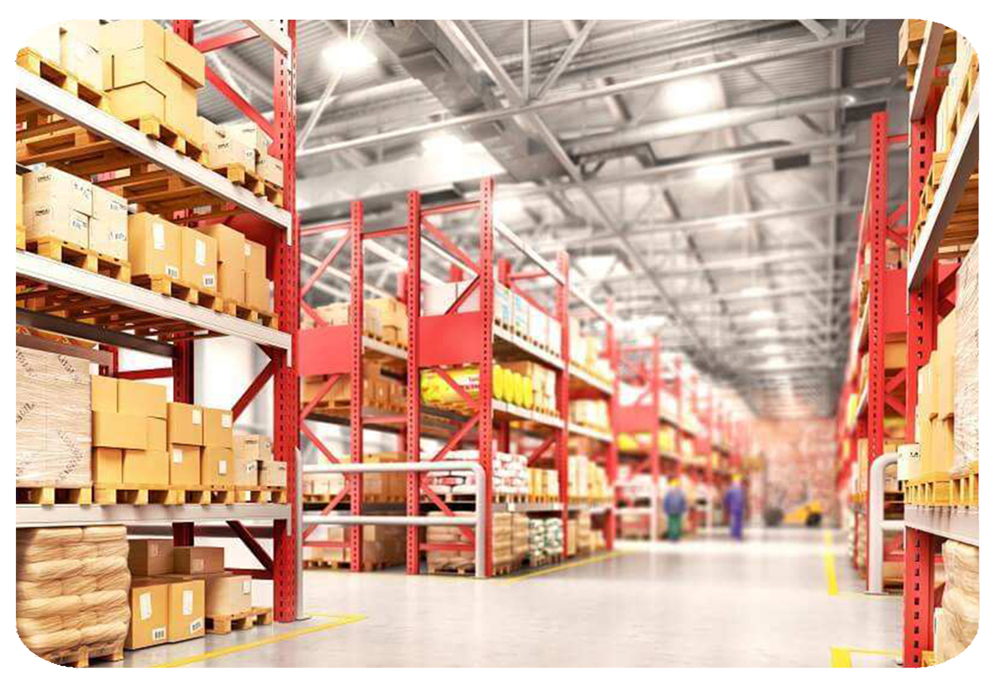
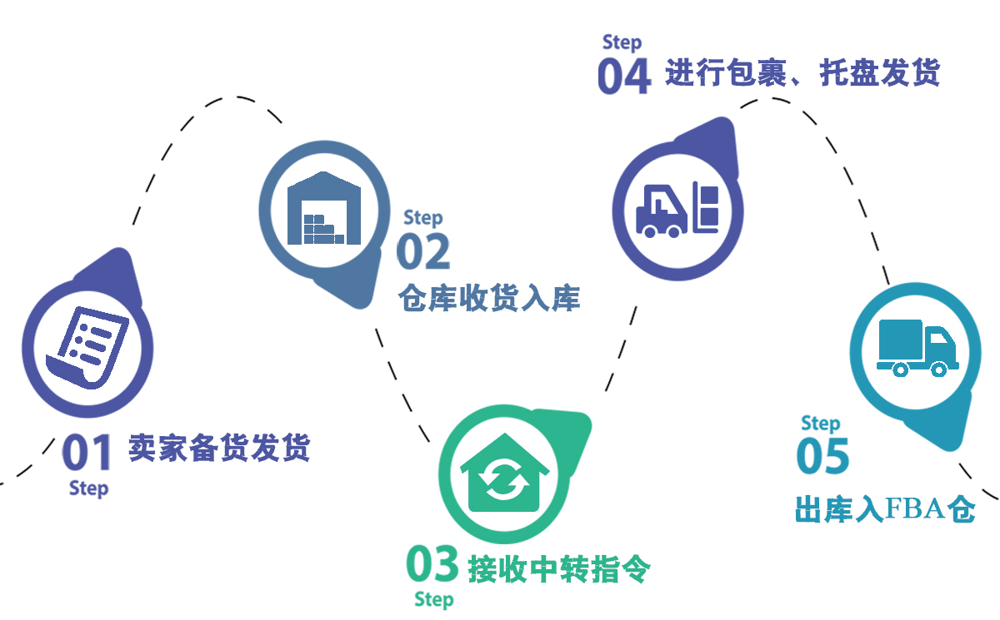

海外仓FBA中转
一、海外仓FBA中转
海外仓中转补仓，是指卖家将一部分货物存储在海外仓中，当亚马逊FBA需要补货时， 则让海外仓将货物运输到指定的亚马逊FBA仓库中，在运输时效、费用方面都是更有优势的。 海外仓在此扮演的是中转站的角色，可以协调解决跨境卖家断货、积压等需求。
尤其是旺季的时候，物流费用大幅涨价，并且从中国补货到美国， 时效很慢，导致卖家容易错过旺季的销售。

二、极速FBA中转优势
三、极速FBA中转服务流程
 卖家在国内备货，把货物运输至极速海外仓
货物到库，仓库卸货进行货物盘点、检查、入库
回复客户入库情况，货物暂存仓库，等候客户中转单
根据客户中转单对货物进行包裹，托盘发货
货物出库转入FBA仓，中转完成
卖家在国内备货，把货物运输至极速海外仓
货物到库，仓库卸货进行货物盘点、检查、入库
回复客户入库情况，货物暂存仓库，等候客户中转单
根据客户中转单对货物进行包裹，托盘发货
货物出库转入FBA仓，中转完成

四、FBA中转常见问题
-
 海外仓提供的中转服务只针对FBA仓吗？
海外仓提供的中转服务只针对FBA仓吗？
-
 FBA仓只提供给在亚马逊平台上的卖家使用。而第三方建立的海外仓一般都没这个要求，
只要卖家有货，无论在哪个平台售卖，都可以使用海外仓，海外仓都可以提供中转的服务。
FBA仓只提供给在亚马逊平台上的卖家使用。而第三方建立的海外仓一般都没这个要求，
只要卖家有货，无论在哪个平台售卖，都可以使用海外仓，海外仓都可以提供中转的服务。
-
海外仓对货物的大小、重量以及尺寸等有什么要求？
-
相对而言，海外仓对于货物的要求不像FBA仓那么严格，
FBA仓对货品的包装尺寸、重量有严格要求，而海外仓对货品外包装几乎没有要求。
卖家可根据自己的货物特点进行最优化的打包，最大限度地节省国际费用。海外仓接到货物后，
可以按FBA包装要求将货物进行分箱，重新打包，贴标等服务，然后按客户指令发至各FBA仓。
-
海外仓可以提前囤货吗？
-
海外仓是可以提前囤货的，选择海外仓中转，提前将货物发送至海外仓，还可以在旺季期间避免物流高峰，
节省从国内发货的时间和费用。
-
货物如果较少，海外仓是否也可以提供中转服务？
-
中转服务对于货物的数量是没有要求的，只要卖家选择了中转服务，海外仓就可以提供相对应的中转服务。
-
卖家如何选择一家靠谱的海外仓服务商？
-
卖家在选择海外仓服务商的时候，首先是需要结合自己的实际需求，然后是考量海外仓，
比如海外仓的仓库布局、费用报价、入库出库时效等，对这些因素进行慎重考量。